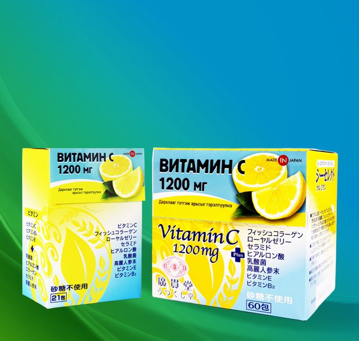
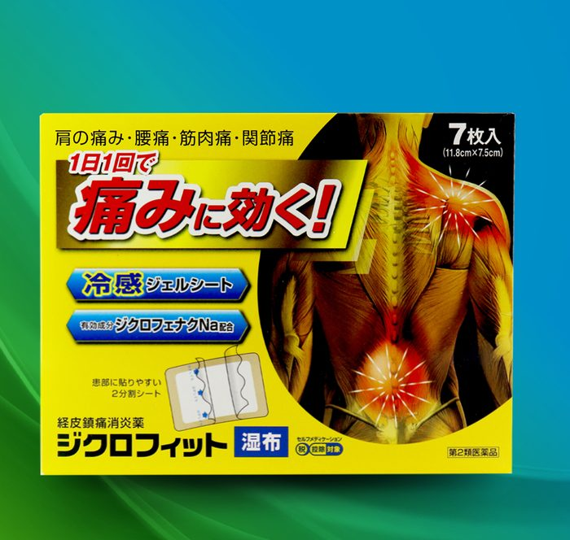
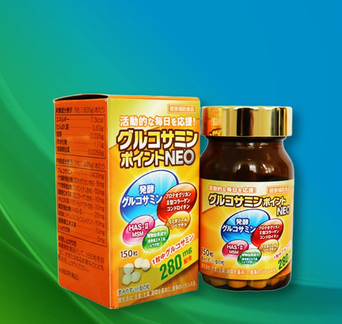
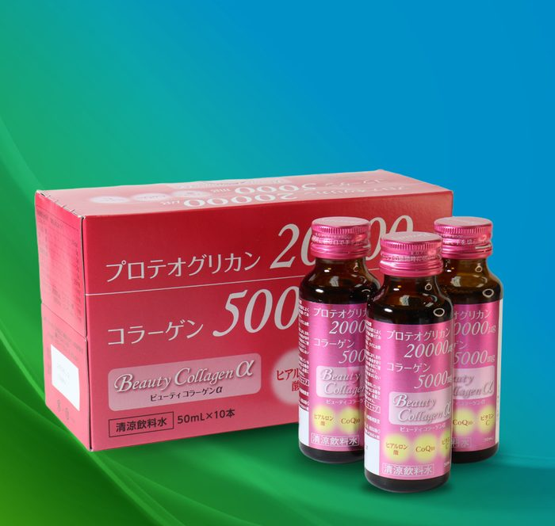
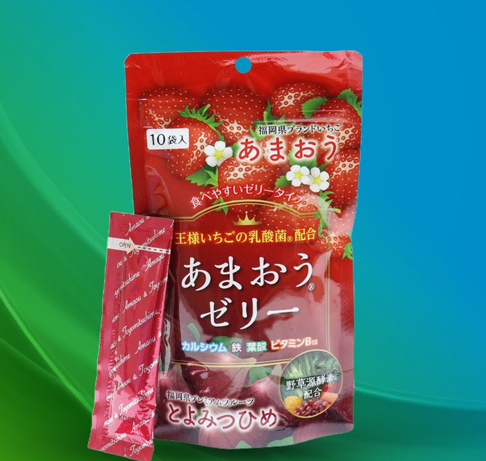
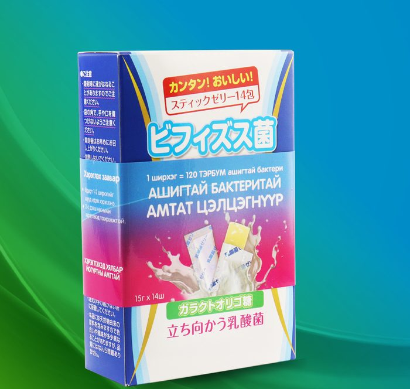
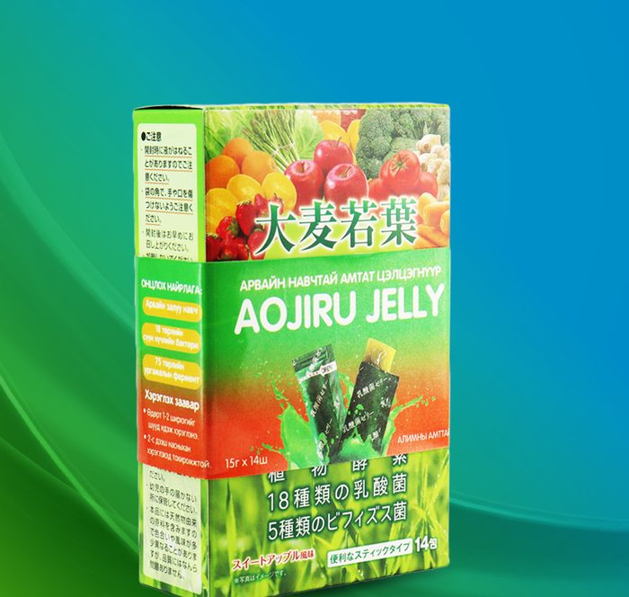
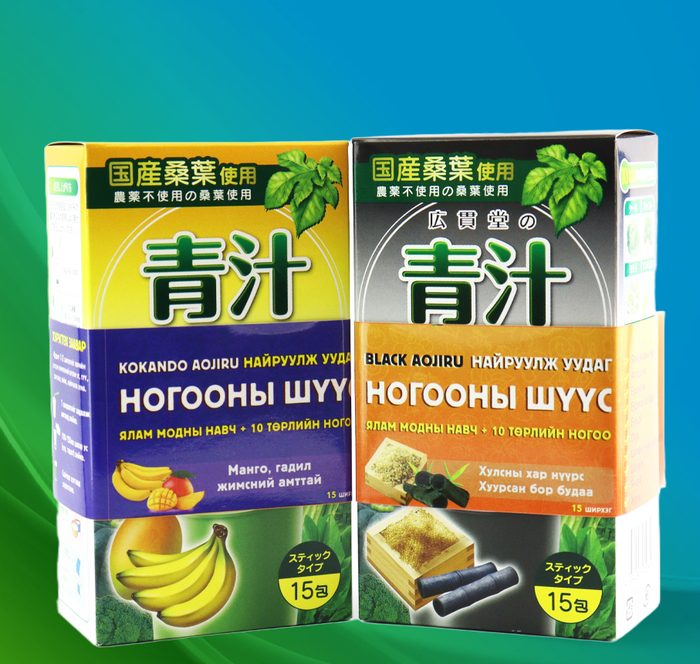
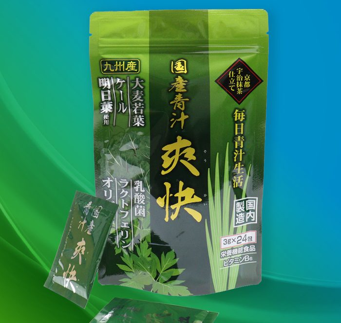

Жэй Пи Эн Эм ХХК (Жапан Медикал)
Жэй Пи Эн Эм ХХК (Жапан Медикал ХХК)
2014 он
Л.Оюунзул (Хүний их эмч, Эм судлалын ухааны доктор)
Эм, эмнэлгийн хэрэгсэл, хүнсний нэмэлт бүтээгдэхүүний импортлон борлуулалт
Эрүүл мэндийн боловсрол олгох сургалт, семинар
Эрүүл мэнд, анагаах ухааны мэргэжлийн орчуулга
Албан ёсны түншлэл, чанартай бүтээгдэхүүн, мэргэжлийн зөвлөх баг, хэрэглэгчийн боловсрол.
"Нотолгоонд суурилсан эрүүл мэндийн шийдлийн тэргүүлэх экосистемийг цогцлоож, монгол хүний эрүүл урт наслалтыг уртасгахад хувь нэмрээ оруулна."
"Чанартай бүтээгдэхүүн, мэргэжлийн зөвлөгөөгөөр гэр бүл бүрийн өдөр тутмын эрүүл амьдралд хувь нэмэр оруулах."

ВИТАМИН C 1200 мг
- Ханиад томуу зэрэг халдварт өвчнөөс урьдчилан сэргийлнэ
- Цусны эргэлтийг сайжруулж, эд эсийн нөхөн төлжилтийг дэмжинэ
- Арьсыг цайруулж, сэвх нөсөө толбо үүсэхээс хамгаална
- Арьсыг гадны таагүй нөлөөллөөс хамгаална
- Арьсыг чийгшүүлж, уян хатан байдлыг нь сэргээнэ
- Нэмэлт 10 төрлийн найрлагатай учир эрүүл мэнд, гоо сайхны цогц витамин. Авч явах болон хэрэглэхэд хялбар.
- Витамин C 1200 мг
- Сүүн хүчлийн бактери
- Хиалуроны хүчил
- Витамин E
- Серамид
- Коллаген пептид
- Зөгийн сүүнцэр
- Хүн орхоодой
- Витамин B2
- Өдөрт 1-2 ширхгийг шуудан эсвэл усаар дараулж хэрэглэнэ

ДИКЛОФЕНАКТАЙ НААЛТ
- Үе мөчний өвдөлт, мөр нуруу, гар бугуй, тохой, булчингийн өвдөлт, мөр хөшиж үед өвдөлт намдаах
- Яс, үе мөчний үрэвсэл, гэмтлийн дараах зөөлөн эд ба үений үрэвслийг намдаах
- Үений эмгэгтэй холбоотой хавагнах ба өвдөлтийн хам шинж илрэх, булчингийн өвдөлт, булгарах үед өвдөлт намдаах
- Хэрхийн гаралтай зөөлөн эдийн үрэвсэл, үений үрэвслийн үед үрэвсэл дарах
Гол найрлага: Диклофенак натри (1 ширхэг наалтад 100мг)
Бусад нэмэлт найрлага: D-сорбитол, өтгөрүүлсэн глицерин, саармагжуулсан полиакрилат, желатин, каолин, карбоксиметил целлюлоз натри, карбоксивинил полимер, метил акрилат ба 2-этилгексил акрилат кополимер, полиоксиэтилен нонилфенил эфир, l-ментол, полисорбат 80, натрийн гидросульфат, хүчил шүлт тэнцвэржүүлэгч, хөнгөн цагааны глицинат, этанол, титаны исэл, сорбитан моноолеат.
- Өдөрт нэг удаа наалтыг хуулан авч өвчтэй, зовуурьтай хэсэгтээ наажхэрэглэнэ
- Нэг удаа 2 ширхэгээс илүү наажхэрэглэж болохгүй
- Ижил найрлагатай өөр бүтээгдэхүүнтэй хамт хэрэглэж болохгүй
- Нүд болон салст бүрхэвчийн эргэн тойронд, ил шархтай хэсэг, мөөгөнцөр, идээт үрэвсэлтэй, хэт чийгтэй арьсанд наажболохгүй

ГЛЮКОЗАМИН POINT NEO
- Үе мөчний хэвийн үйл ажиллагааг бэхжүүлэн дэмжих
- Яс мөгөөрс, үенд тэжээл өгөх
- Коллаген болон глюкозамины хэрэгцээг хангаж, дутагдлаас урьдчилан сэргийлэх
- Ясны сийрэгжилтээс урьдчилан сэргийлэх
- Үе мөчний үрэвслээс урьдчилан сэргийлэх
- Үе мөчний хөдөлгөөний уян хатан байдлыг сайжруулах
- Глюкозамин
- Хондроитин
- Коллаген (2-р төрлийн)
- Имидазол дипептид
- MSM (Метилсульфанилметан)
- Протеогликан
- HAS-II (тахианы сарвууны экстракт)
- Ajuga decumbens (эмийн ургамал)
- Цагаан гаа
- Өдөрт 1 удаа 5 ширхгээр хоолны дараа хүйтэн болон бүлээн усаар дараулан ууна

BEAUTY COLLAGEN DRINK
- Арьсыг чийгшүүлж, арьсны толигор уян хатан байдлыг сэргээх
- Суларсан арьсыг чангалан үрчлээ үүсэхээс сэргийлэх
- Арьсны сэвх нөсөө толбыг бүдгэрүүлж, дахин үүсэхээс хамгаалах
- Үс хумсыг бэхжүүлж, хугарч гэмтэхийг багасган эрүүл ургалтыг дэмжинэ
- Яс сийрэгжихээс сэргийлэн ясны зөөлөн эд үрэгдэж элэгдэхээс хамгаална
Коллаген пептид 5000 мг + Протеогликан 20000 мкг
- Өдөрт 1 ширхэг (50 мл)-ийг орой унтахаасаа 60-90 минутын өмнө зөөлөн сэгсэрч шууд уужхэрэглэнэ

ГҮЗЭЭЛЗГЭНЭТЭЙ ЦЭЛЦГЭНҮҮР
- Цус төлжүүлэх
- Цус багадалтаас урьдчилан сэргийлэх
- Цус өтгөрөлтөөс сэргийлэх
- Дархлаа дэмжих
- Арьсыг эрүүл өнгөлөг толигор болгох
- Гэдэсний хэвийн орчныг сайжруулах
- Судасны хатуурлаас сэргийлэх
- Сүүн хүчлийн бактери
- Амао гүзээлзгэнэ
- Инжир жимс
- Алимны цуу
- Төмөр
- Кальци
- Фолийн хүчил
- Витамин B12
- Витамин C
- Хүнсний эслэг
- Эрдэс давс
- Амин хүчилүүд
- 60 төрлийн ургамлын фермент
- Бүх насны хүмүүс (2-оос дээш) өдөрт 1-2 ширхгийг шуудзадалж иднэ

АШИГТАЙ БАКТЕРИТАЙ ЦЭЛЦГЭНҮҮР
- Гэдэсний хэвийн үйл ажиллагааг хангах
- Дархлаа дэмжих
- Өтгөн хаталтаас сэргийлэх
- Харшлын урвалыг багасгах
- Ядаргаанаас урьдчилан сэргийлэх
- Ханиад томуу болон бусад халдварт өвчнөөс урьдчилан сэргийлэх
- Цус багадалтаас урьдчилан сэргийлэх
- Гэдэсний хэвийн орчныг сайжруулах
- Сүүн хүчлийн бактери Faecalis EC-12
- Faecalis бактери FK-23
- Бифидо бактери
- Галакто-олигосахарид
- Коллаген
- Хиалуроны хүчил
- Үл боловсрох декстрин (хүнсний эслэг)
- 1-2 ширхгийг шуудзадалж, идэж хэрэглэнэ. 2-оос дээш насныханд.

НОГООНЫ ЦЭЛЦГЭНҮҮР / AOJIRU JELLY /
- Гэдэсний хэвийн орчинг дэмжин сайжруулна
- Эслэгээр баялаг учир өтгөн хаталтаас урьдчилан сэргийлэх
- Дархлаа дэмжинэ
- Ногооны дутагдлыг нөхөх
- Төмөр, кальци, цайр, витамин C, B1, B2, B3, B6, фолийн хүчил агуулсан тул цус төлжилтийг дэмжих үйлчилгээтэй
- Амин дэм, эрдэс бодисын дутагдалаас сэргийлнэ
- Биеийн жинг барихад туслах үйлчилгээтэй
- Арвайн залуу навч
- 18 төрлийн сүүн хүчлийн бактери
- 5 төрлийн бифидо бактери
- 75 төрлийн ургамлын фермент
- Ихэс
- Коллаген
- Кальци
- Төмөр
- Хар цуу
- Өдөрт 1-2 ширхгийг шуудидэж хэрэглэнэ
- 2-оос дээш насныханд хэрэглэнэ

НАЙРУУЛЖ УУДАГ НОГООНЫ ШҮҮС
- Олон төрлийн амин дэм, эрдэс бодис, хүнсний эслэгээр баялаг
- Хүнсний ногооны дутагдлаас сэргийлнэ
- Үндсэн түүхий эд болох ялам модны навч нь нарийн гэдсэн дэх сахарын шимэгдэлтийг бууруулж, чихрийн шижин өвчнөөс урьдчилан сэргийлэх үйлчилгээтэй
- Хүнсний эслэг нь өтгөн хаталтаас сэргийлэхээс гадна гэдсэн дэх ашигтай бактерийг идэвхжүүлж, дархлааг дэмждэг
- Аспарагус (Asparagus)
- Брокколи (Broccoli)
- Буржгар байцаа (Kale)
- Буурцай (Spinach)
- Окра (Abelmoschus esculentus)
- Ялам модны навч (Mulberry leaves)
- Цагаан лууванги навч (Radish leaves)
- Шаралж (Artemisia princeps)
- Яншуй (Parsley)
- Хулуу (Pumpkin)
- Япон буудцай (Komatsuna)
Нэмэлт найрлага: манго, гадил, хулсны хар нүүрс, хуурсан бор будаа
- Нэг ширхгийг аяганд хийж дээрээс нь тохирох хэмжээний ус (100-150 мл) эсвэл халуун, хүйтэн сүү, тараг зэргийг хийж сайтар хутгаад уугна

НАЙРУУЛЖ УУДАГ НОГООНЫ ШҮҮС
- Хүнсний ногооны дутагдлаас сэргийлэх
- Дархлаа дэмжих
- Амин дэм, эрдэс бодисын дутагдлаас сэргийлэх
- Эслэгээр баялаг учир өтгөн хаталтаас урьдчилан сэргийлэх
- Хоолны шингэц сайжруулах
- Гэдэсний ашигтай бактерийг нэмэгдүүлж, гэдэсний хэвийн орчинг тэнцвэржүүлэх
- Цус багадалтаас урьдчилан сэргийлэх
- Тархины үйл ажиллагааг сайжруулахад нөлөөлж, зүрхний шигдээс, мартах өвчнөөс сэргийлэх бөгөөд тухтай амрахад туслах болно. Үүнээс гадна цусан дахь сахарын хэмжээг тэнцвэржүүлнэ
- Арвайн соёолж
- Ashitaba
- Kale
- Лактоферрин
- Nano ECF сүүн хүчлийн бактери
- Хүнсний эслэг
- Витамин B6
- Фрукто-олигосахарид
- Үжи матча цай
- Өдөрт 1-2 уутыг (3 г) 100 мл орчим халуун, бүлээн, хүйтэн ус, сүүнд найруулж уухаас гадна тараг, зайрмаг зэрэгт нэмж хэрэглэж болно
Түнш компаниуд
Япон дахь түнш компаниуд
大協薬品工業株式会社
グレートアンドグランド株式会社
元気プロジェクト
日本ケフィア株式会社
明治薬品株式会社
日新薬品工業株式会社
アピ株式会社
アダプトゲン製薬九州株式会社
Монгол дахь түнш компаниуд
МОНОС групп
АзиФарм эмийн сан
НОМИН
Carrefour
ХҮРМЭН
Гашуун булаг ХХК эмийн сан
emart
EFES Supermarket